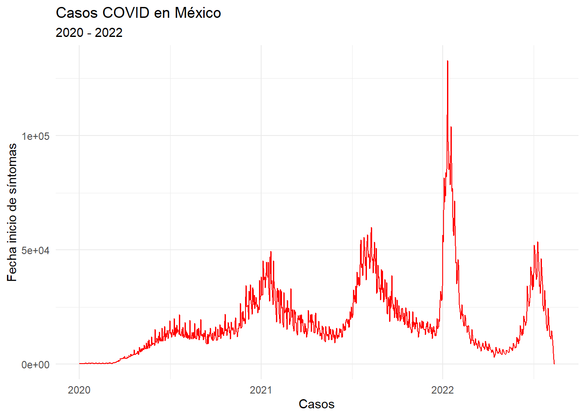
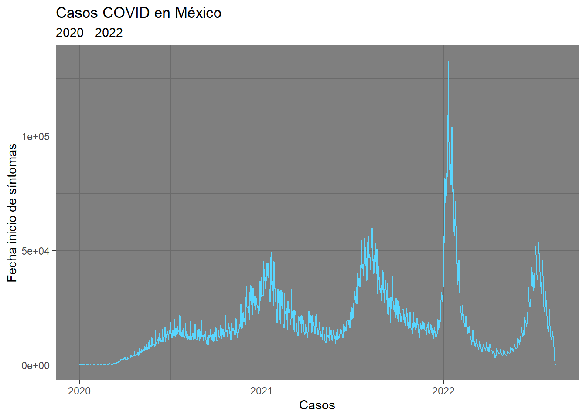

Reporte Casos COVID en México
Este es un reporte sencillo sobre los casos COVID en México. Los datos están en nuestro dropbox.
Reporte casos últimos 10 días.
| Inicio de Síntomas | Conteo |
|---|---|
| 2022-08-14 | 3 |
| 2022-08-13 | 262 |
| 2022-08-12 | 2211 |
| 2022-08-11 | 4789 |
| 2022-08-10 | 8254 |
| 2022-08-09 | 10694 |
| 2022-08-08 | 14741 |
| 2022-08-07 | 12251 |
| 2022-08-06 | 11185 |
| 2022-08-05 | 12068 |
¿Como fue la pandemia para los mexicanos?
Reporte de casos reportados desde inicios de 2020 y hasta octubre de 2022.

Notemos aquí una ENORME ventaja de Quarto. Si este reporte lo quisiéramos actualizar semanal o mensualmente, bastaría con cambiar el nombre del archivo al inicio y podríamos generar todo un nuevo reporte con solo cambiar una línea de código.
Reporte con código.
Ahora supongamos que sí queremos mostrar nuestro código.
Importar paqueterías
Usaremos dos librerías nuevas para poder generar tablas más estéticas en nuestros reportes.
# message=FALSE, warning=FALSE
# Omitiremos las warnings porque no queremos ensuciar nuestro reporte. Notemos que instalaremos y usaremos dos librerías nuevas.
# Instalamos librerías
#install.packages('kableExtra')
#install.packages('scales')
# Importamos librerías
library(tidyverse)
library(kableExtra)
library(scales)
# Leemos datos
df <- read_csv('data/casos_covid_agosto_2022.csv')
head(df)# A tibble: 6 x 2
FECHA_SINTOMAS n
<date> <dbl>
1 2020-01-01 287
2 2020-01-02 233
3 2020-01-03 247
4 2020-01-04 245
5 2020-01-05 349
6 2020-01-06 345Se ve bien pero hay una mejor opción con la librería kable.
Reporte casos últimos 10 días.
Generamos una tabla de los ultimos 10 días arreglando descendentemente por fecha de inicio de síntomas y después cambiamos los nombres de columnas.
df %>%
arrange(desc(FECHA_SINTOMAS)) %>%
head(10) %>%
kableExtra::kbl(col.names = c("Inicio de Síntomas","Conteo")) %>%
kableExtra::kable_styling()| Inicio de Síntomas | Conteo |
|---|---|
| 2022-08-14 | 3 |
| 2022-08-13 | 262 |
| 2022-08-12 | 2211 |
| 2022-08-11 | 4789 |
| 2022-08-10 | 8254 |
| 2022-08-09 | 10694 |
| 2022-08-08 | 14741 |
| 2022-08-07 | 12251 |
| 2022-08-06 | 11185 |
| 2022-08-05 | 12068 |
Gráfica
Recordemos que con ggplot podemos generar nuestras gráficas.
ggplot(df, aes(x = FECHA_SINTOMAS, y = n))+
geom_line(color="#59d6ff")+
labs(
title = 'Casos COVID en México',
subtitle = '2020 - 2022',
x = 'Casos',
y = 'Fecha inicio de síntomas'
)+
theme_dark()
Ejercicio 1
Supongamos que eres la directora de salud de la UNICEF. Para un evento deberás preparar un reporte sobre la vacunación de HPV en distintos países del mundo.
Utiliza el dataset hpv_unicef.csv que está en nuestro dropbox para generar un reporte que enviarás a los presidentes de cada país involucrado. Incluye cualquier información, tabla, gráfica que creas pertinetnte. El ejercicio es muy libre :)
Recuerda que los presidentes (por lo general) no saben programar (como nosotros) así que no los espantes con códigos de R. Mantén tu reporte lo más sencillo posible.
Ejercicio 2
Mismo contexto del ejercicio anterior pero ahora generarás un reporte para estudiantes de ingeniería biomédia que tienen contexto y conocimiento de programación. A ellos sí les interesa ver tus códigos y que sean reproducibles.
Genera el reporte pertinente.
¡Felicidades! Terminaste el curso :D